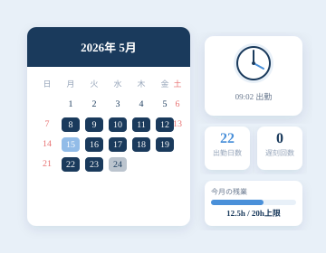
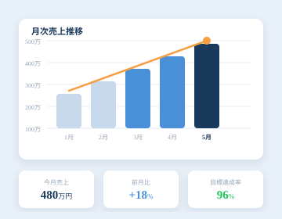
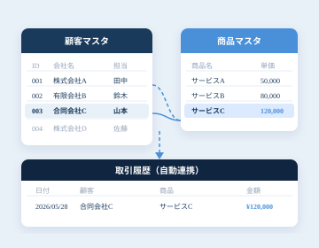
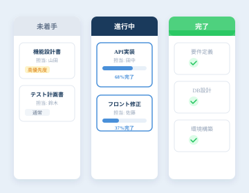
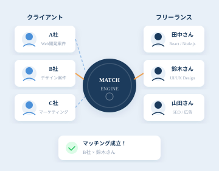
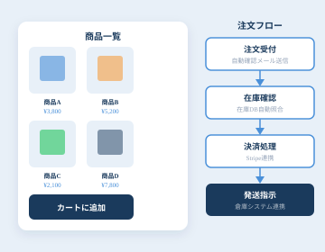
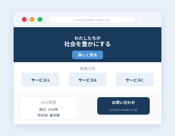
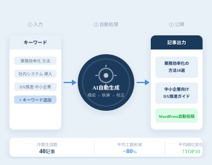

Works
実績一覧
要件定義から運用保守まで、すべて一貫して対応した8件の事例です。

出勤簿・勤怠管理システム
01解決した課題
- 紙の出勤簿・Excelによる集計作業が毎月発生していた
- 残業時間の把握が遅れ、月末にならないと実態が見えなかった
- 有給・特休などの種別管理が属人化していた
実装・対応内容
- ブラウザから打刻できるWebシステムを構築
- 残業・有給・遅刻などの自動集計と月次PDF出力
- 管理者向けダッシュボードで全スタッフの状況をリアルタイム把握
成果
- 月次集計作業が 約3時間 → ゼロ に
- 残業アラートにより過重労働を事前に防止

売上管理・集計システム
02解決した課題
- 複数担当者の売上をExcelで管理しており、集計ミスや転記漏れが多発
- 月末にならないと数字が見えず、リアルタイムの進捗把握ができなかった
- 顧客ごとの取引履歴を追いかけるのに時間がかかっていた
実装・対応内容
- 案件・受注・請求を一元管理するWebシステムを構築
- 担当者別・顧客別・月別の自動集計ダッシュボード
- 目標値の設定と達成率の自動計算・アラート機能
成果
- 集計作業が 週2時間 → ほぼゼロ に
- 月中での進捗把握が可能になり、営業アクションが早期化

マスタ管理・データ整備システム
03解決した課題
- 顧客・商品・取引先情報がExcelや紙に分散しており、二重入力が常態化
- 情報の更新が各自バラバラで、最新データがどこにあるか分からない状態
- 担当者が変わるたびに情報の引き継ぎに時間がかかっていた
実装・対応内容
- 顧客・商品・担当者マスタを一元管理するWebデータベースを構築
- マスタ変更の履歴管理と変更通知機能
- 既存Excelデータの移行・クレンジング対応
成果
- 二重入力・転記作業が 完全に解消
- データ参照の問い合わせ件数が大幅に減少

日報・進捗管理システム
04解決した課題
- 日報をメールで送付しており、上司が確認・返信する手間が大きかった
- プロジェクトの進捗状況が担当者しかわからず、遅延の発見が遅れた
- 過去の日報を振り返るのに時間がかかり、引き継ぎ時に情報が散逸した
実装・対応内容
- カンバン形式の進捗管理ボードを構築（タスク・ステータス管理）
- 日報入力フォームと承認ワークフローの自動化
- 週次・月次の作業サマリー自動生成機能
成果
- 進捗の可視化により遅延案件を 平均2日早く 検知
- 上司の確認・返信作業が 1日30分削減

マッチングシステム
05解決した課題
- クライアントとフリーランスの紹介をメール・電話で手動対応しており、担当者の負荷が高かった
- 条件のすり合わせや日程調整に複数日かかり、機会損失が生じていた
- 過去の取引履歴や評価が蓄積されず、次のマッチングに活かせなかった
実装・対応内容
- スキル・条件・稼働可否に基づく自動マッチングロジックの構築
- クライアント・フリーランス双方のプロフィール管理画面
- マッチング後の契約・評価フローのデジタル化
成果
- マッチング対応時間が 平均3日 → 当日中 に短縮
- 担当者1名の工数が月換算で 約40時間削減

ECサイト・販売管理システム
06解決した課題
- 受注をメールで受けており、在庫・発送・請求の管理がバラバラだった
- 注文状況の確認に複数ツールを行き来する必要があり、見落としが発生
- 売上・在庫データの集計に毎週数時間かかっていた
実装・対応内容
- 受注〜発送〜請求を一元管理するECバックエンドを構築
- 在庫数の自動更新と欠品アラート機能
- 決済（Stripe）・発送連携・売上ダッシュボードの統合
成果
- 受注〜発送指示までの処理時間が 1件あたり15分 → 2分以下 に
- 売上・在庫の把握がリアルタイムで可能に

コーポレートサイト制作
07解決した課題
- 既存サイトが古く、スマートフォンに対応しておらず機会損失が生じていた
- 問い合わせフォームが機能しておらず、営業チャンスを取りこぼしていた
- 更新作業に都度制作会社に依頼が必要で、費用と時間がかかっていた
実装・対応内容
- レスポンシブ対応のコーポレートサイトをフルスクラッチで制作
- 問い合わせフォームの構築と自動返信・通知メールの設定
- 自社で更新できるCMS（簡易管理画面）の組み込み
成果
- 公開後3ヶ月でお問い合わせ数が 月0件 → 月8件 に増加
- サイト更新作業を完全に内製化、外注費をゼロに

SEO記事自動生成・投稿システム
08解決した課題
- SEO対策のための記事制作に毎月多大な時間とコストがかかっていた
- 記事制作の外注費が高く、品質のばらつきも問題になっていた
- WordPressへの投稿作業が手動で、公開までのリードタイムが長かった
実装・対応内容
- キーワードを入力するとAIが構成・本文・メタ情報を自動生成するシステムを構築
- WordPress REST APIと連携した自動投稿・スケジューリング機能
- 生成記事の品質チェックと重複コンテンツ検知の仕組み
成果
- 記事制作工数が 1本4時間 → 20分以下 に短縮
- 外注費を 月15万円削減、3ヶ月でシステム費用を回収
あなたの会社でも同じような課題がありますか？
まずは気軽にご相談ください。